Modul 5 Struktur Data: Graphviz, Linked List
Kembali ke Struktur Data (dengan Python)
Pada praktikum kali ini, kita akan membahas mengenai linked list, serta cara memvisualisasikannya menggunakan yang namanya Graphviz.
Sebelum mengikuti praktikum ini, ada baiknya kalian me-review kembali modul berikut:
Untuk apa? Kita akan menyusun struktur data linked list menggunakan class :) semoga kalian sudah cukup paham tentang class yaa. Kalau belum pun, semoga kalian akan lebih paham setelah praktikum kali ini :D
Graphviz
Graphviz adalah semacam software yang bisa membuat visualisasi “graf” yang bagus. Mungkin di antara kalian belum semuanya kenal dengan graf, itu tidak masalah. Kurang lebih, suatu graf adalah kumpulan bulet-bulet (disebut simpul, node, atau vertex) yang disambung oleh “busur” (juga disebut arc atau edge), di mana tiap edge bisa berupa garis biasa atau berupa panah.
Berikut contoh graf yang digambar dengan Graphviz:
Lho, di mata kuliah Struktur Data kan ga ada graf. Untuk apa kita pelajari Graphviz?
Dengan Graphviz, kita bisa membuat visualisasi untuk berbagai struktur data nantinya, termasuk linked list hari ini. Kita bisa meminta Graphviz untuk membuat bentuk node yang tidak sederhana, termasuk bentuk node yang kita kenal di linked list, kemudian membuat edge yang berupa panah, sehingga kita benar-benar bisa menggambarkan suatu linked list :)
Instalasi Graphviz
Sebelum bisa menggunakan Graphviz, perlu di-install terlebih dahulu.
Di Google Colaboratory, kalian tinggal mengetik:
pip install graphviz
Sedangkan, apabila menggunakan Jupyter Notebook melalui Anaconda, buka Anaconda Prompt lalu ketik:
conda install graphviz
Tunggu instalasi selesai, barulah buka Jupyter Notebook dan ketik
pip install graphviz
Note:
Apabila Anda menggunakan Jupyter Notebook tetapi tidak melalui Anaconda, langkah
conda install graphvizbisa digantikan dengan menginstal Graphviz dari https://graphviz.gitlab.io/download/Untuk penulisan
pip, ada kemungkinan kalian perlu mengetik!pipdengan tanda seru di awal. Biasanya tidak perlu, tapi kalau menjadi error, boleh dicoba dengan tanda seru.
Mengenal Graphviz: node dan edge
Setelah instalasi selesai, kita bisa import:
import graphviz as gvDengan Graphviz, ada dua jenis gambar graf yang bisa kita buat:
Digraph(graf berarah, yaitu tiap edge bisa berupa panah maupun garis biasa)Graph(graf sederhana, yaitu tiap edge hanya bisa berupa garis biasa, bukan panah)
Karena Digraph lebih banyak fiturnya, kita akan membuat Digraph saja.
Sebagai contoh sederhana, kita bisa membuat Digraph yang terdiri dari dua node yaitu A dan B, dengan edge berupa panah yang menghubungkan A ke B. Kita buat objek Digraph terlebih dahulu:
graf1 = gv.Digraph()Kemudian, kita bisa menambahkan node A dan B sebagai berikut:
graf1.node("A")
graf1.node("B")Selanjutnya, kita bisa membuat/menambahkan suatu edge dari A ke B, seperti berikut:
graf1.edge("A", "B")Sekarang kita bisa lihat grafnya:
display(graf1)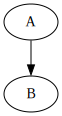
Note: apabila fungsi display tidak dikenal, silakan import:
from IPython.display import display
Sebenarnya, kita bisa saja menambahkan edge baru tanpa membuat node terlebih dahulu. Contohnya, menambahkan edge dari A ke C (suatu node baru):
graf1.edge("A", "C")Kita bisa lihat lagi:
display(graf1)
Bahkan, kita bisa membuat ulang graf di atas dengan cara seperti berikut:
graf2 = gv.Digraph()
graf2.edge("A", "B")
graf2.edge("A", "C")display(graf2)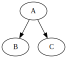
Menariknya, kita bisa saja membuat panah yang menunjuk ke dirinya sendiri.
graf3 = gv.Digraph()
graf3.edge("A", "B")
graf3.edge("B", "B")display(graf3)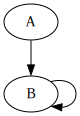
Kita juga bisa membuat dua panah berlawanan arah di antara dua node seperti berikut:
graf4 = gv.Digraph()
graf4.edge("A", "B")
graf4.edge("B", "A")display(graf4)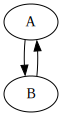
Membuat satu panah yang dua arah juga bisa, dengan menentukan dir atau direction dari edge tersebut menjadi "both" seperti berikut:
graf5 = gv.Digraph()
graf5.edge("A", "B", dir="both")display(graf5)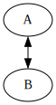
Daripada panah, kita juga bisa membuat edge berupa garis biasa, dengan dir="none" (bukan None ya!)
graf6 = gv.Digraph()
graf6.edge("A", "B", dir="none")display(graf6)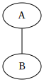
Sejauh ini, grafnya selalu cenderung “dari atas ke bawah”. Daripada seperti itu, kita bisa mengubahnya menjadi kiri ke kanan untuk keseluruhan graf. Caranya, kita memasang graph_attr atau atribut graf, berbentuk dict, dan di dalamnya kita buat "rankdir": "LR" (left-right) seperti di bawah ini.
Setelah objek Digraph dibuat, barulah tiap edge yang kita tambahkan akan dari kiri ke kanan.
graf7 = gv.Digraph(graph_attr={"rankdir": "LR"})
graf7.edge("A", "B")display(graf7)
Selain node diberi nama, edge juga bisa diberi keterangan, lho! Caranya, pasang nilai label ketika membuat edge baru:
graf8 = gv.Digraph(graph_attr={"rankdir": "LR"})
graf8.edge("A", "B", label="test")display(graf8)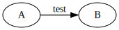
Sebenarnya, di dalam suatu node, ada yang namanya name (atau ID) dan ada juga yang disebut label.
labeladalah tulisan yang tampil di gambar pada node tersebutnameatau ID adalah sebutan yang dikenal oleh Graphviz ketika misalnya ingin membuat edge
Selama ini, yang kita tentukan adalah name. Kebetulan, khusus node, apabila label tidak ditentukan, maka otomatis akan diambil dari name.
Berikut ini, kita bisa coba menentukan name dan label sekaligus ketika membuat node:
graf9 = gv.Digraph()
graf9.node("matkul1", label="Alprog")
graf9.node("matkul2", label="Strukdat")
graf9.edge("matkul1", "matkul2")display(graf9)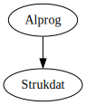
Perlu dicatat, apabila kita menambahkan edge sekaligus membuat node baru, kita tidak bisa memasang label untuk node baru tersebut.
Sehingga, apabila kalian ingin membuat node dengan label tertentu, yang nantinya akan disambung ke node lain dengan edge, maka sebaiknya node baru tersebut dibuat dengan .node() terlebih dahulu, barulah name nya digunakan ketika membuat .edge()
Selain itu, bahkan graf itu sendiri juga bisa memiliki nama, yang ditentukan ketika membuat objek grafnya.
graf10 = gv.Digraph("Nama graf")
graf10.edge("A", "B")
graf10.edge("B", "C")display(graf10)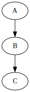
Coba letakkan mouse kalian pada gambarnya selama beberapa detik. Akan muncul tulisan “Nama graf”. (Kalau tidak muncul, coba klik kanan dulu, pencet “Open image in New Tab” atau semacamnya.)
Apabila kalian ingin menentukan misalnya rankdir, tuliskan setelah nama grafnya.
graf11 = gv.Digraph("Graf ke kanan", graph_attr={"rankdir": "LR"})
graf11.edge("A", "B")
graf11.edge("B", "C")display(graf11)
Import/export, bahasa DOT, file .gv
Sebenarnya, Graphviz melibatkan yang namanya bahasa DOT (dibaca “dot”), yaitu semacam “bahasa komputer” untuk mendeskripsikan graf, yang kemudian diolah oleh Graphviz menjadi gambar.
(Sebenarnya, bahasa DOT mudah dipahami dan bisa kalian pelajari sendiri kalo iseng :D)
Tiap kali kita membuat graf baru dengan Graphviz melalui Python ini, Graphviz selalu menyusun bahasa DOT terlebih dahulu, baru mengolah bahasa DOT tersebut menjadi gambar.
Kita bisa melihat bahasa DOT untuk tiap graf melalui atribut .source seperti berikut:
print(graf11.source)digraph "Graf ke kanan" {
graph [rankdir=LR]
A -> B
B -> C
}
Kemudian, kita bisa memasukkan bahasa DOT tersebut ke dalam semacam software yang bisa mengolah bahasa DOT menjadi gambar. Contohnya adalah link berikut:
https://dreampuf.github.io/GraphvizOnline/
Sebaliknya, dari bahasa DOT, Graphviz juga bisa membuat objek Digraph misalnya, menggunakan graphviz.Source() seperti berikut:
graf12 = gv.Source("""
digraph "Graf ke kanan" {
graph [rankdir=LR]
A -> B
B -> C
}
""")display(graf12)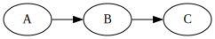
Selain import seperti itu, baik bahasa DOT maupun gambar yang dibuat oleh Graphviz bisa di-export dengan menetapkan .format terlebih dahulu (misalnya “svg” atau “png”), lalu menggunakan .render() sebagai berikut:
graf11.format = "svg"
graf11.render()'Graf ke kanan.gv.svg'Seperti di Modul 3 kemarin ketika membahas I/O, ada file baru yang muncul.
- Apabila menggunakan Google Colaboratory, silakan tekan tombol folder di sebelah kiri.
- Apabila menggunakan Jupyter Notebook, silakan periksa folder yang di dalamnya ada file
.ipynbyang sedang kalian gunakan.
Akan muncul dua file baru, yaitu:
Graf ke kanan.gvGraf ke kanan.gv.svg
File pertama adalah file .gv (Graphviz) yang mengandung bahasa DOT yang disusun sebelum diolah menjadi gambar. File kedua adalah file gambar yang diolah, dalam format sesuai dengan yang kita tentukan.
Kita bisa membaca isi Graf ke kanan.gv sebagaimana kita membaca isi text file:
with open("Graf ke kanan.gv", "r") as isi:
print(isi.read())digraph "Graf ke kanan" {
graph [rankdir=LR]
A -> B
B -> C
}
Selain itu, perhatikan bahwa nama file nya sesuai dengan nama graf yang kita tentukan ketika membuat objek graf11 tadi. Kalau lupa, kita bisa memeriksa nama graf melalui atribut .nama
print(graf11.name)Graf ke kananDengan atribut itu pula, kita bisa mengubah nama grafnya:
graf11.name = "Nama baru"Sehingga, ketika misalnya Graphviz menyusun bahasa DOT, akan digunakan nama yang baru:
print(graf11.source)digraph "Nama baru" {
graph [rankdir=LR]
A -> B
B -> C
}
Variasi node dengan HTML-like labels
Ingat atribut label yang bisa dipasang ketika membuat suatu node? Sebenarnya, kita bisa memanfaatkan atribut tersebut untuk membuat bentuk node sesuka hati kita, lho! Terutama, kita bisa membuat node dengan bentuk seperti tabel.
Penulisan label seperti tabel ini mirip seperti struktur bahasa HTML, sehingga disebut HTML-like labels.
Perhatikan syntax (penulisan) berikut.
graf13 = gv.Digraph()
graf13.node("A", shape="none", label="""<
<TABLE>
<TR>
<TD>P</TD>
<TD>Q</TD>
</TR>
<TR>
<TD>R</TD>
<TD>S</TD>
</TR>
</TABLE>
>""")
graf13.node("B") # node biasa
graf13.edge("A", "B")display(graf13)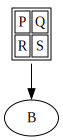
Perhatikan,
- Ketika membuat node yang ingin berbentuk tabel, ditambahkan atribut
shape="none"(bukanNone) di samping menulislabelnya. labelberupa long string, sehingga diawali dan diakhiri dengan tiga tanda kutip.- Karakter pertama dari long string tersebut haruslah
<dan karakter terakhir haruslah> - Kemudian, penulisan tabel diawali dengan penulisan
<TABLE>, kemudian<TR>(table row) untuk tiap baris, lalu<TD>(table data) untuk tiap sel. Masing-masing selalu ditutup dengan</TD>,</TR>, dan</TABLE>, bagaikan keberadaanendif,endfor,endwhiledan sebagainya di pseudocode.
Agar lebih bagus, di bagian <TABLE> kita bisa menambahkan:
BORDER="0" CELLBORDER="1" CELLSPACING="0"
Seperti berikut:
graf14 = gv.Digraph()
graf14.node("A", shape="none", label="""<
<TABLE BORDER="0" CELLBORDER="1" CELLSPACING="0">
<TR>
<TD>P</TD>
<TD>Q</TD>
</TR>
<TR>
<TD>R</TD>
<TD>S</TD>
</TR>
</TABLE>
>""")
graf14.node("B")
graf14.edge("A", "B")display(graf14)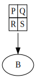
Bagaimana kalau misalnya kita ingin panahnya seperti “berasal” dari sel tertentu? Caranya, kita bisa membuat yang namanya port, misalnya di sel R, kemudian edge yang dibuat akan kita sambung dari port tersebut, seperti berikut:
graf15 = gv.Digraph()
graf15.node("A", shape="none", label="""<
<TABLE BORDER="0" CELLBORDER="1" CELLSPACING="0">
<TR>
<TD>P</TD>
<TD>Q</TD>
</TR>
<TR>
<TD PORT="port1">R</TD>
<TD>S</TD>
</TR>
</TABLE>
>""")
graf15.node("B")
graf15.edge("A:port1", "B")display(graf15)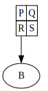
Kalau di Microsoft Excel atau Google Sheets, kita bisa melakukan merge beberapa sel, entah secara horizontal atau vertikal atau bahkan dua-duanya. Ketika menyusun HTML-like labels, kita bisa menggunakan COLSPAN (merentang beberapa kolom) dan ROWSPAN (merentang beberapa baris) untuk membuat efek seperti di-merge.
graf16 = gv.Digraph()
graf16.node("A", shape="none", label="""<
<TABLE BORDER="0" CELLBORDER="1" CELLSPACING="0">
<TR>
<TD ROWSPAN="2">P</TD>
<TD COLSPAN="2">Q</TD>
</TR>
<TR>
<TD>R</TD>
<TD>S</TD>
</TR>
</TABLE>
>""")
graf16.node("B")
graf16.edge("A", "B")display(graf16)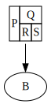
(Singly) Linked List
Singly-linked list (seringkali disebut linked list saja) adalah semacam “rantai” dari node, di mana tiap node berisi 2 nilai, yaitu data dan next (yaitu pointer ke node lain). Node yang paling pertama itu ditunjuk oleh suatu pointer bernama head, yang menjadi awal dari linked list.
(Terkadang, pointer next ditulis LINK. Artinya dan kegunaannya sama.)
Pertama-tama, kita buat struktur node terlebih dahulu menggunakan class. (Apabila pointer next tidak menunjuk ke apapun, biasanya ditulis NULL atau di sini None.)
Biasanya, di kuliah, disebutnya class Node atau Node saja. Namun, berhubung modul ini akan membahas doubly-linked list dengan struktur yang agak berbeda, maka node untuk singly-linked list akan kita sebut SLNode (singly-linked node) agar berbeda.
class SLNode:
def __init__(self, data, next=None):
self.data = data
self.next = nextKita bisa bermain-main dengan node ini sebagaimana yang dibahas di kuliah. Misalnya, kita buat node baru yang menyimpan data 15:
p = SLNode(15)Saat ini, node tersebut ditunjuk oleh pointer yang di sini kita sebut p. Secara tidak langsung, kita telah membuat linked list dengan head nya adalah p.
Kita bisa mengakses data yang disimpan di data dan juga alamat yang tersimpan di next:
print(p.data)15print(p.next)NoneSaat ini, node yang ditunjuk oleh p itu belum menunjuk ke manapun, sehingga p.next masih bernilai None.
Kita bisa melihat alamat dari node itu sendiri menggunakan id:
print(id(p))4404463888Alamat ini akan selalu berbeda tiap kali kita membuat node baru, dan di antara dua komputer kemungkinan besar juga berbeda. Memang wajar apabila alamat yang kalian dapatkan itu berbeda dengan yang tertera di modul.
Namun, alamat biasanya ditampilkan dalam bentuk heksadesimal (base-16), sedangkan yang kita dapatkan dengan id masih berupa bilangan bulat desimal (base-10). Kita bisa menggunakan hex untuk mengubah base-10 menjadi base-16:
print(hex(id(p)))0x10686c910Awalan 0x itu hanya penanda bahwa bilangannya berupa heksadesimal.
Selanjutnya, kita bisa membuat node baru di p.next, yaitu yang ditunjuk oleh p, sebagai berikut:
p.next = SLNode(28)Sehingga, data 28 itu bisa diakses dari p seperti berikut:
print(p.next.data)28Sedangkan, setelah node berisi 15 dan node berisi 28, belum ada node lagi, sehingga:
print(p.next.next)NoneMari kita buat node baru lagi setelah node berisi 28:
p.next.next = SLNode(-3)Sehingga, kita bisa mengakses data masing-masing node dari p:
print(p.data)
print(p.next.data)
print(p.next.next.data)15
28
-3Kita bisa juga membuat pointer baru yang menunjuk ke node yang sudah ada. Misalnya, kita bisa membuat pointer bernama q yang menunjuk ke node yang berisi 28, seperti berikut:
q = p.nextSehingga, p.next.next bisa diakses dengan q.next:
print(p.next.next.data)
print(q.next.data)-3
-3Bahkan, kita bisa mengubah data -3 menjadi yang lain melalui q, dan itu akan berubah juga jika diakses melalui p:
q.next.data = -63
print(q.next.data)
print(p.next.next.data)-63
-63Kok bisa? Karena, sesuai yang sudah kita tetapkan, q menunjuk ke node yang sama dengan p.next. Kita bisa periksa alamatnya:
print(hex(id(q)))
print(hex(id(p.next)))0x10686d780
0x10686d780Sehingga alamat dari node yang ditunjuk oleh q.next akan sama dengan yang ditunjuk oleh p.next.next:
print(hex(id(q.next)))
print(hex(id(p.next.next)))0x10686d000
0x10686d000Sejauh ini, kita sudah bermain dengan node dan membuat linked list secara manual. Sebenarnya, kita juga bisa membuat suatu class untuk suatu linked list secara keseluruhan. Di dalam class itu, kita bisa membuat atribut (variabel) yang menyimpan head, serta berbagai method (fungsi) untuk algoritma-algoritma operasi dasar yang kita pelajari di kuliah, seperti insert node di awal/akhir dan delete node di awal/akhir. Dengan begitu, kita bisa menggunakan linked list dengan lebih nyaman.
Kita akan menyebutnya class SLList (singly-linked list).
class SLList:
def __init__(self):
self.head = None
def is_empty(self):
if self.head == None:
return True
else:
return False
# Traversal, hanya untuk menghitung banyaknya node di linked list
def get_size(self):
count = 0
current = self.head
while current != None:
count += 1
current = current.next
return count
# Traversal, print masing-masing data node dari awal sampai akhir
def print_all(self):
print("head -> ", end="")
temp = self.head
while temp != None:
print(temp.data, end = " -> ")
temp = temp.next
print("None")
# Traversal, semacam linear search, cari letak node dengan data tertentu
def get_pos(self, x):
pos = -1
current = self.head
while current != None:
pos += 1
if current.data == x:
return pos
current = current.next
return -1
def ins_front(self, newdata):
newnode = SLNode(newdata)
newnode.next = self.head
self.head = newnode
def ins_end(self, newdata):
newnode = SLNode(newdata)
if self.is_empty():
self.head = newnode
else:
temp = self.head
while temp.next != None:
temp = temp.next
# sekarang temp sudah di node terakhir
temp.next = newnode
def ins_pos(self, newdata, pos):
if pos == 0:
self.ins_front(newdata)
else:
current_pos = 0
current = self.head
while (current != None) and (current_pos != pos-1):
current = current.next
current_pos += 1
# Keluar loop, bisa karena current == None atau current_pos == pos-1
# Kalau karena current_pos == pos-1, bisa insert
if (current_pos == pos-1):
newnode = SLNode(newdata)
temp = current.next
current.next = newnode
newnode.next = temp
# Tapi kalau karena current == None,
# berarti posisi yang diminta melampaui panjang linked list
else:
print("Error: posisi melebihi panjang linked list")
def del_front(self):
if self.is_empty():
print("Error: linked list sudah kosong")
else:
temp = self.head.next
del self.head
self.head = temp
def del_end(self):
if self.is_empty():
print("Error: linked list sudah kosong")
else:
temp = self.head
while temp.next.next != None:
temp = temp.next
# sekarang temp ada di node sebelum terakhir
del temp.next
temp.next = None
# Mirip ins_pos, hanya berbeda di bagian current_pos == pos-1
def del_pos(self, pos):
if pos == 0:
self.del_front()
else:
current_pos = 0
current = self.head
while (current != None) and (current_pos != pos-1):
current = current.next
current_pos += 1
# Keluar loop, bisa karena current == None atau current_pos == pos-1
# Kalau karena current_pos == pos-1, maka bisa dihapus selama
# current.next yang mau dihapus itu memang ada
if (current_pos == pos-1) and (current.next != None):
temp = current.next.next
del current.next
current.next = temp
# Tapi kalau karena current == None, atau current.next tidak ada,
# berarti posisi yang diminta melampaui panjang linked list
else:
print("Error: posisi melebihi panjang linked list")
# Method untuk memperoleh digraph yang menggambarkan linked list nya :D
def get_digraph(self):
# Buat digraph baru yang sifatnya dari kiri ke kanan
new_digraph = gv.Digraph(graph_attr={"rankdir": "LR"})
# Pointer untuk menunjuk ke tiap node, mulai dari node pertama
# (akan dilakukan traversal)
current = self.head
# Untuk menghitung node ke-sekian untuk nama node di Graphviz,
# sehingga head menunjuk ke node0, lalu node0 menunjuk ke node1, dst
counter = 0
# Memperoleh alamat yang sedang disimpan di head
# - asumsi awal: tidak ada alamat (None)
next_id = None
next_name = "node0" # ini nanti untuk nama node berikutnya di Graphviz
# - kalau ternyata ada alamat...
if current != None:
# maka simpan alamat tersebut
next_id = hex(id(current))
# kita buat lebih spesifik untuk node berikutnya, tunjuk ke port id
next_name = "node0:id"
# Label (tabel) untuk pointer head
# - pembuka tabel
str_label = "<"
str_label += "<TABLE BORDER=\"0\" CELLBORDER=\"1\" CELLSPACING=\"0\">"
# - baris head
str_label += "<TR><TD>head</TD></TR>"
# - baris alamat (sekalian membuat port namanya "contents")
str_label += "<TR><TD PORT=\"contents\">" + str(next_id) + "</TD></TR>"
# - penutup tabel
str_label += "</TABLE>"
str_label += ">"
# Membuat node head, membuat edge dari head ke node berikutnya
new_digraph.node("head", shape="none", label=str_label)
new_digraph.edge("head:contents", next_name)
# dari port "contents" ke node berikutnya, yang namanya next_name
# Selama node yang ditunjuk bukan None, buatlah node nya di Graphviz,
# lalu lanjut ke node selanjutnya (ini traversal)
while current != None:
# Alamat yang tersimpan pada current.next
# - asumsi awal: tidak ada alamat; current adalah node terakhir
next_id = None
# - kalau ternyata ada alamat...
if current.next != None:
# maka simpan alamat tersebut
next_id = hex(id(current.next))
# Persiapan label (tabel) untuk node
# - pembuka tabel
str_label = "<"
str_label += "<TABLE BORDER=\"0\" CELLBORDER=\"1\" CELLSPACING=\"0\">"
# - baris tulisan "data", "next"
str_label += "<TR><TD>data</TD><TD>next</TD></TR>"
# - baris untuk isi data dan isi next
str_label += "<TR>"
str_label += "<TD>" + str(current.data) + "</TD>"
str_label += "<TD PORT=\"next\">" + str(next_id) + "</TD>"
str_label += "</TR>"
# - baris tulisan "alamat node", merentang dua kolom
str_label += "<TR><TD COLSPAN=\"2\">alamat node</TD></TR>"
# - baris untuk isi alamat node, merentang dua kolom
str_label += "<TR>"
str_label += "<TD PORT=\"id\" COLSPAN=\"2\">"
str_label += str(hex(id(current)))
str_label += "</TD>"
str_label += "</TR>"
# - penutup tabel
str_label += "</TABLE>"
str_label += ">"
# Membuat node baru di Graphviz dengan label (tabel) tersebut
new_digraph.node("node" + str(counter), shape="none", label = str_label)
# Menentukan nama dua port yang bakal disambung dengan edge,
# yaitu (node saat ini):next disambung ke node(berikutnya):id
# yaitu bagian "next" disambung ke bagian alamat di node berikutnya
nama_node_next = "node" + str(counter) + ":next"
if current.next != None:
nama_alamat_node_berikutnya = "node" + str(counter+1) + ":id"
# atau ke node(berikutnya) saja tanpa id kalau itu ternyata None,
# karena None tidak akan memiliki port id
else:
nama_alamat_node_berikutnya = "node" + str(counter+1)
# Menyambung keduanya
new_digraph.edge(nama_node_next, nama_alamat_node_berikutnya)
# Lanjut ke node selanjutnya
current = current.next
counter += 1
# Kalau sudah keluar loop, artinya current menunjuk ke None
# Berarti tinggal membuat "node" terakhir berisi tulisan None
# (karena sambungannya sudah dibuat di dalam loop, tinggal node nya)
new_digraph.node("node" + str(counter), shape="none", label="None")
# Digraph sudah jadi
return new_digraphtest = SLList()
test.ins_front(5)
test.ins_front(15)
test.ins_front(25)
test.ins_front(35)test.print_all()head -> 35 -> 25 -> 15 -> 5 -> Noneprint(test.get_pos(15))2print(test.get_pos(39))-1test.ins_end(100)test.print_all()head -> 35 -> 25 -> 15 -> 5 -> 100 -> Nonetest.del_front()
test.del_front()test.print_all()head -> 15 -> 5 -> 100 -> Nonetest.del_pos(3)Error: posisi melebihi panjang linked listtest.del_pos(2)test.print_all()head -> 15 -> 5 -> Nonetest.ins_pos(-42, 7)Error: posisi melebihi panjang linked listtest.ins_pos(76, 1)test.print_all()head -> 15 -> 76 -> 5 -> Nonegambar = test.get_digraph()display(gambar)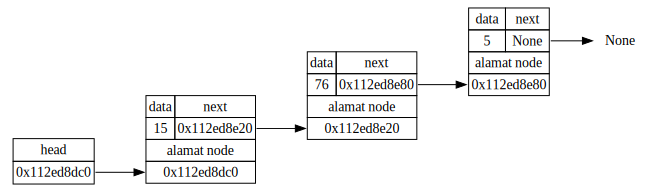
Doubly Linked List
class DLNode:
def __init__(self, data, next=None, prev=None):
self.data = data
self.next = next
self.prev = prevclass DLList:
def __init__(self):
self.head = None
self.tail = None
# Masih sama persis dengan singly linked list
def is_empty(self):
if self.head == None:
return True
else:
return False
# Traversal, hanya untuk menghitung banyaknya node di linked list
# Masih sama persis dengan singly linked list
def get_size(self):
count = 0
current = self.head
while current != None:
count += 1
current = current.next
return count
# Traversal, print masing-masing data node dari awal sampai akhir
def print_all(self):
print("head -> ", end="")
temp = self.head
while (temp != None) and (temp.next != None):
print(temp.data, end = " <-> ")
temp = temp.next
# Khusus node terakhir:
if (temp != None) and (temp.next == None):
print(temp.data, end = " <- ")
print("tail")
def ins_front(self, newdata):
newnode = DLNode(newdata)
newnode.next = self.head
if self.head != None:
self.head.prev = newnode
self.head = newnode
if self.tail == None: # jika tadinya doubly linked list kosong,
# maka newnode menjadi node pertama, ditunjuk oleh head dan tail
self.tail = newnode
# Berbeda dengan singly linked list, tinggal insert di tail;
# tidak perlu traversal
def ins_end(self, newdata):
newnode = DLNode(newdata)
newnode.prev = self.tail
if self.tail != None:
self.tail.next = newnode
self.tail = newnode
if self.head == None: # jika tadinya doubly linked list kosong,
# maka newnode menjadi node pertama, ditunjuk oleh head dan tail
self.head = newnode
def ins_pos(self, newdata, pos):
if pos == 0:
self.ins_front(newdata)
return
n = self.get_size()
if pos == n:
self.ins_end(newdata)
elif pos > n:
print("Error: posisi melebihi panjang linked list")
else:
current_pos = 0
current = self.head
while (current_pos != pos-1):
current = current.next
current_pos += 1
# Keluar loop berarti current_pos == pos-1
newnode = DLNode(newdata)
newnode.prev = current
newnode.next = current.next
current.next = newnode
# Sudah pasti newnode.next != None,
# karena kasus pos == n sudah ditangani
newnode.next.prev = newnode
def del_front(self):
if self.is_empty():
print("Error: linked list sudah kosong")
else:
temp = self.head.next
del self.head
self.head = temp
if temp != None:
temp.prev = None
else: # jika temp == None, maka self.head == None,
# berarti sekarang doubly linkd list kosong,
# sehingga tail juga menunjuk ke None
self.tail = None
def del_end(self):
if self.is_empty():
print("Error: linked list sudah kosong")
else:
temp = self.tail.prev
del self.tail
self.tail = temp
if temp != None:
temp.next = None
else: # jika temp == None, maka self.tail == None,
# berarti sekarang doubly linkd list kosong,
# sehingga head juga menunjuk ke None
self.head = None
def del_pos(self, pos):
if pos == 0:
self.del_front()
return
n = self.get_size()
if pos == n-1:
self.del_end()
elif pos > n-1:
print("Error: posisi melebihi panjang linked list")
else:
current_pos = 0
current = self.head
while (current_pos != pos-1):
current = current.next
current_pos += 1
temp = current.next.next
del current.next
current.next = temp
# Sudah pasti temp != None,
# karena kasus pos == (n-1) sudah ditangani
temp.prev = current
# Method untuk memperoleh digraph yang menggambarkan linked list nya :D
def get_digraph(self):
# Buat digraph baru yang sifatnya dari kiri ke kanan
new_digraph = gv.Digraph(graph_attr={"rankdir": "LR"})
# Pointer untuk menunjuk ke tiap node, mulai dari node pertama
# (akan dilakukan traversal)
current = self.head
# Untuk menghitung node ke-sekian untuk nama node di Graphviz,
# sehingga head menunjuk ke node0, lalu node0 menunjuk ke node1, dst
counter = 0
# Memperoleh alamat yang sedang disimpan di head
# - asumsi awal: tidak ada alamat (None)
next_id = None
next_name = "node0" # ini nanti untuk nama node berikutnya di Graphviz
# - kalau ternyata ada alamat...
if current != None:
# maka simpan alamat tersebut
next_id = hex(id(current))
# kita buat lebih spesifik untuk node berikutnya, tunjuk ke port id
next_name = "node0:id"
# Label (tabel) untuk pointer head
# - pembuka tabel
str_label = "<"
str_label += "<TABLE BORDER=\"0\" CELLBORDER=\"1\" CELLSPACING=\"0\">"
# - baris head
str_label += "<TR><TD>head</TD></TR>"
# - baris alamat (sekalian membuat port namanya "contents")
str_label += "<TR><TD PORT=\"contents\">" + str(next_id) + "</TD></TR>"
# - penutup tabel
str_label += "</TABLE>"
str_label += ">"
# Membuat node head, membuat edge dari head ke node berikutnya
new_digraph.node("head", shape="none", label=str_label)
new_digraph.edge("head:contents", next_name)
# dari port "contents" ke node berikutnya, yang namanya next_name
# Selama node yang ditunjuk bukan None, buatlah node nya di Graphviz,
# lalu lanjut ke node selanjutnya (ini traversal)
while current != None:
# Alamat yang tersimpan pada current.next
# - asumsi awal: tidak ada alamat; current adalah node terakhir
next_id = None
# - kalau ternyata ada alamat...
if current.next != None:
# maka simpan alamat tersebut
next_id = hex(id(current.next))
# serupa untuk prev
prev_id = None
if current.prev != None:
prev_id = hex(id(current.prev))
# Persiapan label (tabel) untuk node
# - pembuka tabel
str_label = "<"
str_label += "<TABLE BORDER=\"0\" CELLBORDER=\"1\" CELLSPACING=\"0\">"
# - baris tulisan "prev", "data", "next"
str_label += "<TR><TD>prev</TD><TD>data</TD><TD>next</TD></TR>"
# - baris untuk isi prev, isi data, dan isi next
str_label += "<TR>"
str_label += "<TD PORT=\"prev\">" + str(prev_id) + "</TD>"
str_label += "<TD>" + str(current.data) + "</TD>"
str_label += "<TD PORT=\"next\">" + str(next_id) + "</TD>"
str_label += "</TR>"
# - baris tulisan "alamat node", merentang dua kolom
str_label += "<TR><TD COLSPAN=\"3\">alamat node</TD></TR>"
# - baris untuk isi alamat node, merentang dua kolom
str_label += "<TR>"
str_label += "<TD PORT=\"id\" COLSPAN=\"3\">"
str_label += str(hex(id(current)))
str_label += "</TD>"
str_label += "</TR>"
# - penutup tabel
str_label += "</TABLE>"
str_label += ">"
# Membuat node baru di Graphviz dengan label (tabel) tersebut
new_digraph.node("node" + str(counter), shape="none", label = str_label)
# Menentukan nama dua port yang bakal disambung dengan edge,
# yaitu (node saat ini):next disambung ke node(berikutnya):id
# yaitu bagian "next" disambung ke bagian alamat di node berikutnya
nama_node_next = "node" + str(counter) + ":next"
# tambahan untuk doubly linked list
nama_node_prev = "node" + str(counter) + ":prev"
if current.next != None:
nama_alamat_node_berikutnya = "node" + str(counter+1) + ":id"
# atau ke node(berikutnya) saja tanpa id kalau itu ternyata None,
# karena None tidak akan memiliki port id
else:
nama_alamat_node_berikutnya = "node" + str(counter+1)
# Menyambung keduanya
new_digraph.edge(nama_node_next, nama_alamat_node_berikutnya)
# tambahan untuk doubly linked list
if current.prev != None:
nama_alamat_node_sebelumnya = "node" + str(counter-1) + ":id"
else:
nama_alamat_node_sebelumnya = "node" + str(counter-1)
if current == self.head:
new_digraph.node("node-1", shape="none", label="None")
new_digraph.edge(nama_node_prev, nama_alamat_node_sebelumnya)
# Lanjut ke node selanjutnya
current = current.next
counter += 1
# Kalau sudah keluar loop, artinya current menunjuk ke None
# Berarti tinggal membuat "node" terakhir berisi tulisan None
# (karena sambungannya sudah dibuat di dalam loop, tinggal node nya)
new_digraph.node("node" + str(counter), shape="none", label="None")
# Tambah pointer tail
# - asumsi awal: tidak ada alamat (None)
tail_id = None
tail_name = "node" + str(counter-1) # ini nanti untuk nama node tail
# - kalau ternyata ada alamat...
if self.tail != None:
# maka simpan alamat tersebut
tail_id = hex(id(self.tail))
# kita buat lebih spesifik untuk node berikutnya, tunjuk ke port id
tail_name += ":id"
# Label (tabel) untuk pointer tail
# - pembuka tabel
str_label = "<"
str_label += "<TABLE BORDER=\"0\" CELLBORDER=\"1\" CELLSPACING=\"0\">"
# - baris head
str_label += "<TR><TD>tail</TD></TR>"
# - baris alamat (sekalian membuat port namanya "contents")
str_label += "<TR><TD PORT=\"contents\">" + str(tail_id) + "</TD></TR>"
# - penutup tabel
str_label += "</TABLE>"
str_label += ">"
# Membuat node tail, membuat edge dari tail ke node nya
new_digraph.node("tail", shape="none", label=str_label)
new_digraph.edge("tail:contents", tail_name)
# dari port "contents" ke node yang ditunjuk tail, namanya tail_name
# Digraph sudah jadi
return new_digraphtestDL = DLList()
testDL.ins_front(5)
testDL.ins_front(15)
testDL.ins_front(25)
testDL.ins_front(35)testDL.print_all()head -> 35 <-> 25 <-> 15 <-> 5 <- tailgambarDL = testDL.get_digraph()display(gambarDL)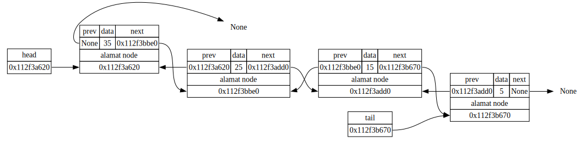